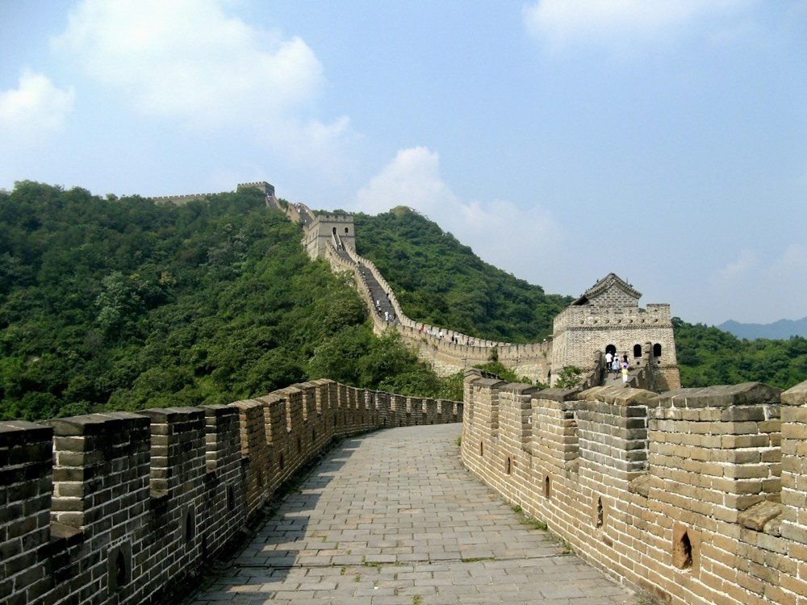
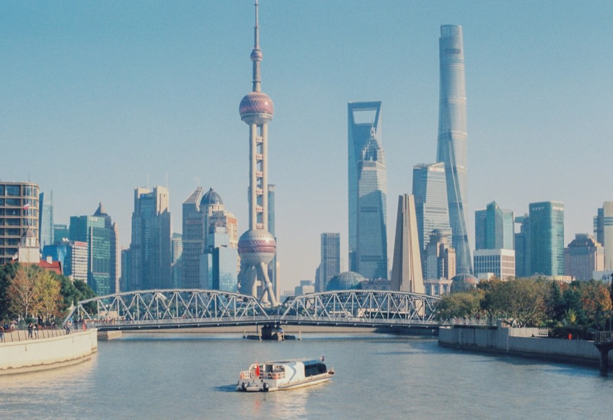
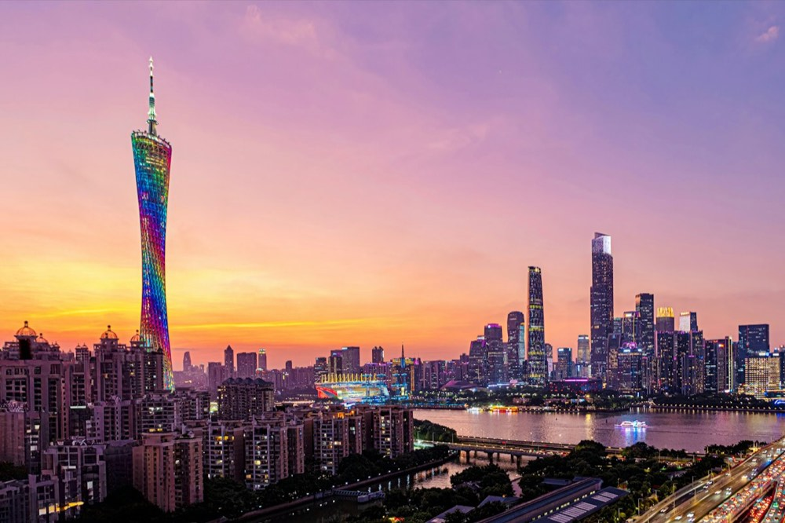
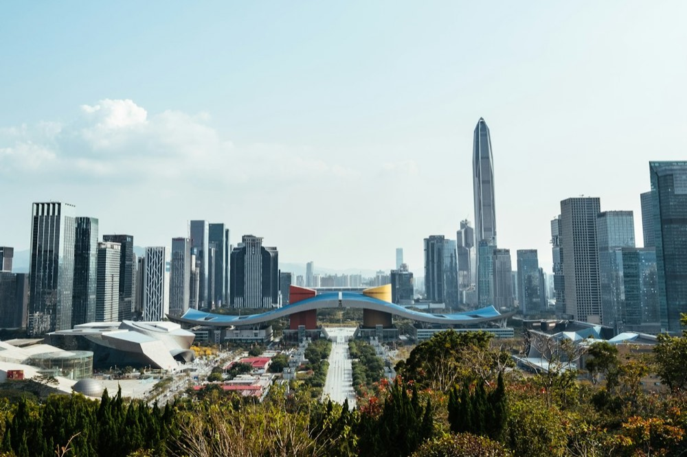
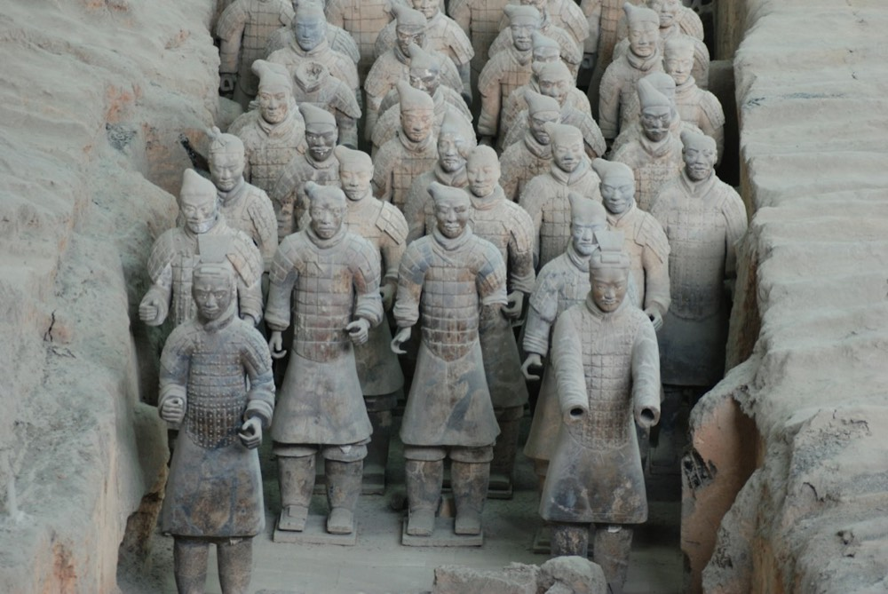
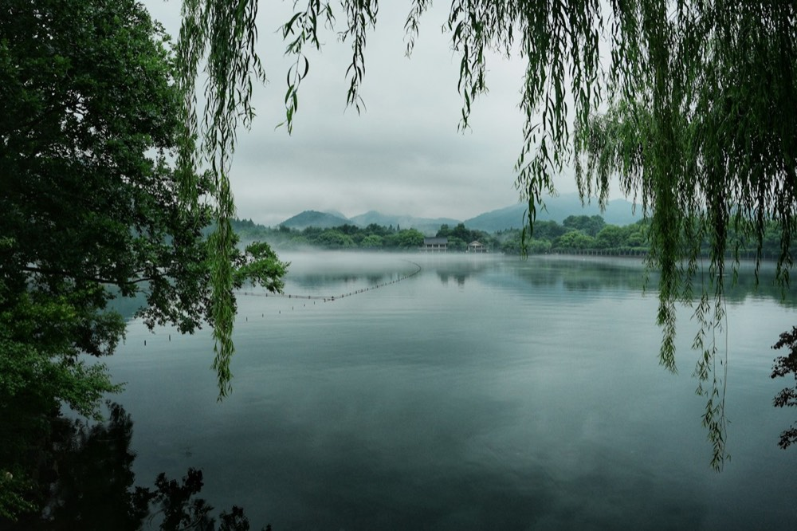
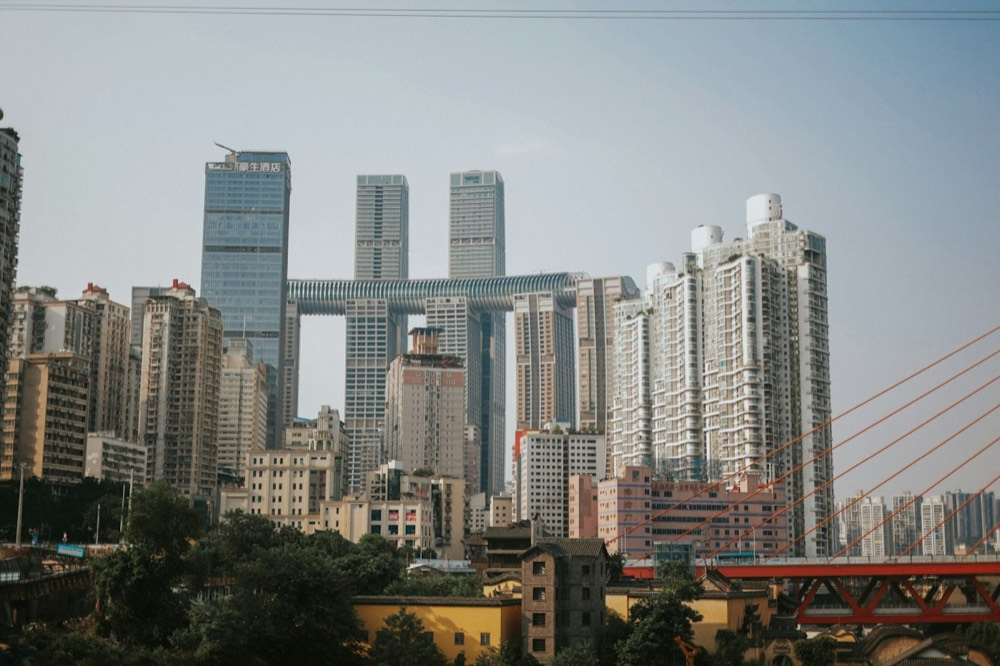
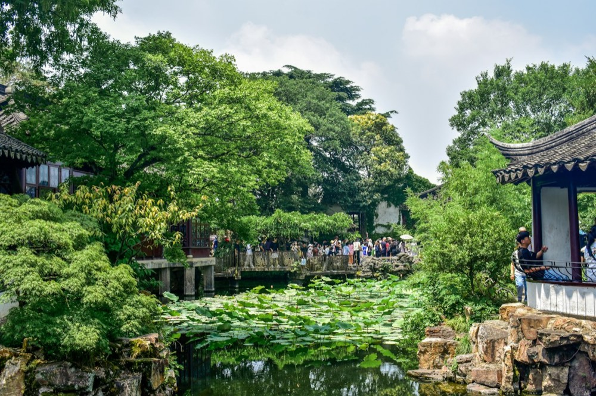
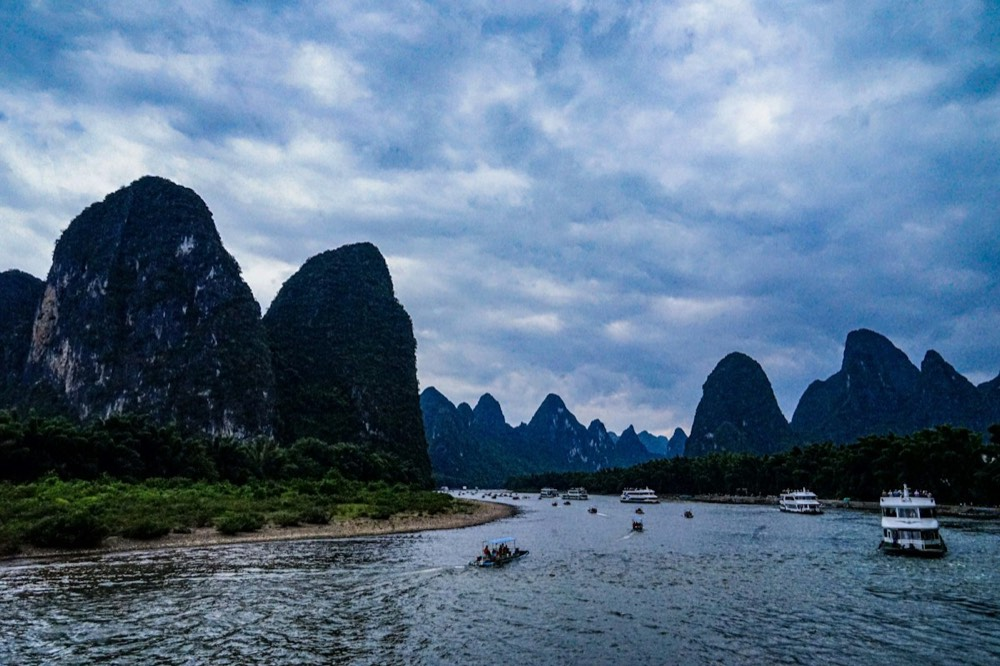

01
Beijing
Imperial courtyards, the Great Wall, hutong lanes, and a city built for long walks.
Ask about Beijing ↗Photo: UnsplashPaceLync Travel · China travel planning
PaceLync Travel helps international visitors turn a first trip to China into a clear, comfortable, and memorable journey.

01 — BeijingChina rewards travelers who leave room for contrast: imperial courtyards in the morning, a neighborhood noodle shop at noon, and a city glowing after dark.
We make the first decisions easier for visitors from abroad, with practical city starting points, route ideas, and a simple email conversation before you book.
Imperial courtyards, the Great Wall, hutong lanes, and a city built for long walks.
Ask about Beijing ↗Photo: Unsplash
02Riverside views, Art Deco streets, lively neighborhoods, and a modern Chinese pulse.
Ask about Shanghai ↗Photo: Unsplash
03Cantonese flavors, the Pearl River at dusk, arcades, markets, and warm southern energy.
Ask about Guangzhou ↗Photo: Unsplash
04A fast-moving coastal city for design, architecture, parks, and contemporary culture.
Ask about Shenzhen ↗Photo: Unsplash
05Walk the old city wall, meet the Terracotta Army, and taste the starting point of the Silk Road.
Ask about Xi'an ↗Photo: UnsplashGiant pandas, tea houses, spicy food, and an easygoing pace that invites you to stay longer.
Ask about Chengdu ↗Photo: Unsplash
07West Lake walks, tea country, quiet gardens, and a softer side of the modern east.
Ask about Hangzhou ↗Photo: Unsplash
08Mountain streets, hotpot, river views, and one of China's most cinematic city nights.
Ask about Chongqing ↗Photo: Unsplash
09Classical gardens, canal towns, silk traditions, and a slower counterpoint to Shanghai.
Ask about Suzhou ↗Photo: Unsplash
10Li River boats, misty karst peaks, and a landscape that feels lifted from an ink painting.
Ask about Guilin ↗Photo: UnsplashYou do not need a perfect itinerary before reaching out. Tell us what you want to see, how long you have, and what kind of pace feels right.
Share your preferred dates, starting city, and the places or experiences you are curious about.
Use the ten city guides above to find a first stop, then build outward from there.
We can continue the conversation by email so the route matches your time, interests, and comfort level.
Plan a China journey
Send us a note with your dates, interests, and where you are traveling from. We will use email to discuss the next step.